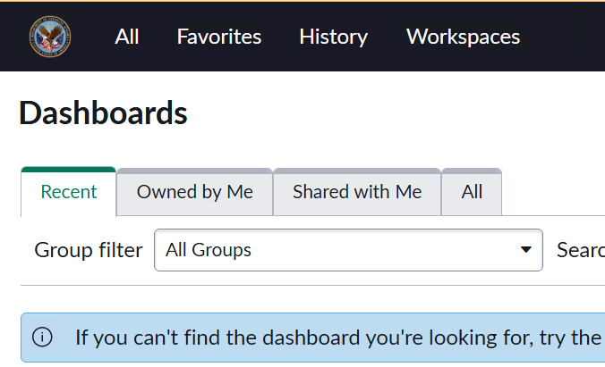
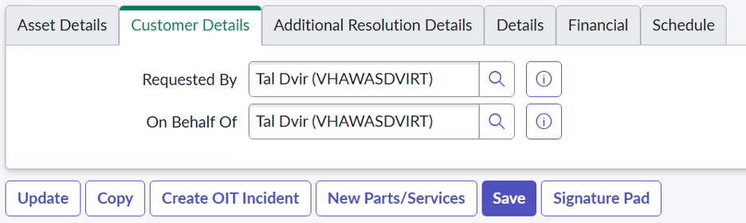
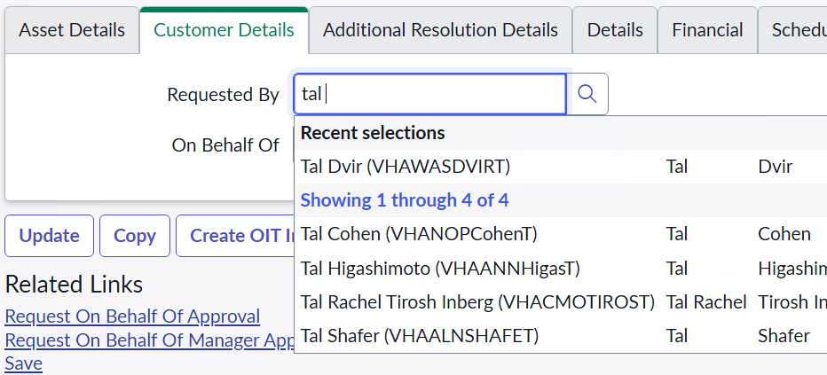
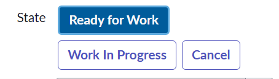
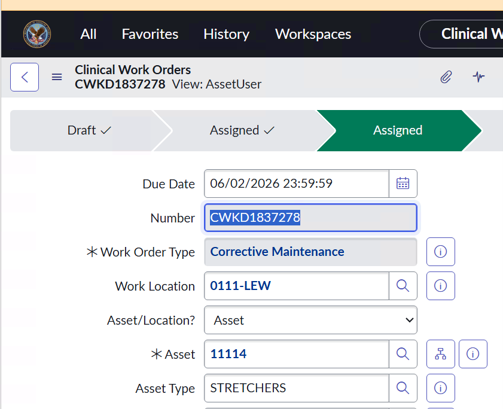

User Guide
Welcome to the HTM150: Nuvolo for Technicians Labs! This guide is designed to help you navigate through the various labs included in this course. Each lab focuses on a specific aspect of using Nuvolo for biomedical technicians, providing hands-on experience and practical knowledge. For the purposes of this course, you’ll be acting as a technician in the Walla Walla facility in Washington. This facility has been using Nuvolo for a few years, and has a lot of available data to use as examples. All your location information will be set to this facility, and your devices and work orders will be pulled from their information.
Getting Started
- Access Nuvolo Training Environment: Use the training environment for all labs. Login via https://vaoittrain.servicenowservices.com with your VA.gov account.
- Set Up YourHTM Training Environment: Navigate to https://vaoittrain.servicenowservices.com/htm
- Navigate This Guide: Use the dropdown menu above to select a specific lab. All sections include step-by-step instructions, screenshots, and interactive elements like input fields for answers.
- Theme Toggle: Switch between light and dark mode using the toggle in the top right for better readability.
Tips for Success
- Explore Freely: Don't hesitate to click around Nuvolo—use the "History" tab to backtrack if needed. Avoid using your browser's back button, as it may not work well with Nuvolo.
- Document Your Work: Many labs include input fields for recording answers (e.g., work order numbers). Use these to track your progress and share with instructors.
- Troubleshooting: If you encounter issues, you're not alone! Ask your instructor(s) for help and you'll be helping out your peers too!
- Practice Hypotheticals: Labs encourage creating hypothetical work orders and assets to build confidence without real-world consequences.
If you have questions, reach out to your instructor or refer to the course materials. Happy learning and mastering Nuvolo!
Happy learning!
Lab 1: Orientation and Navigation
Part 1: Setting up Your Ward
For the purposes of this course, you’ll be acting as a technician in the Walla Walla facility in Washington. This facility has been using Nuvolo for a few years, and has a lot of available data to use as examples. All your location information will be set to this facility, and your devices and work orders will be pulled from their information.
- Navigate to yourHTM at https://vaoittrain.servicenowservices.com/htm
- After logging in, you should see the yourHTM homepage. Verify that you are in the training environment by the banner that appears along the top of the screen.

- Next, click Set My Filters from the top bar.

- You’ll be directed to a form with 2 required filters: VISN and Facility. Make sure that your VISN is set to VISN 20, and your facility is set to Walla Walla, WA. We will be using Walla Walla as our example facility for the rest of these labs.
- You’ll notice there are optional Additional Location Filters underneath these required fields. These filters will help narrow down your available devices; however, they are not required. Please leave them blank for now.

- Once your screen matches the above screenshot, click Submit.
Congratulations, you have successfully set up your ward! Feel free to close this page for now. We’ll come back to yourHTM in a later lab.
Part 2: Nuvolo Profiles
Now, we’ll move into Nuvolo. Here, we have two more areas we need to verify our information in. Let’s walk through each of those now.
- Navigate to Nuvolo at https://vaoittrain.servicenowservices.com. If prompted, select your VA.gov account to sign in. You may be automatically logged in.
- You should be directed to the ITIL User Dashboard and see a screen like this. Verify that you are in the Training environment by looking for the banner along the top. It may be pink or yellow.
- Remember that the ITIL User Dashboard is the default homepage for Nuvolo, and will frequently be the first thing you see after logging in.

- Select the Profile Icon in the top right corner of your browser. It will be labeled with your initials.

- Confirm you see the following list. It will include your initials, your name, and your position along the top.

- Select “Profile” from the list

- Confirm that the information listed here is accurate. If it isn't, let your manager know so that they can correct it.

Next, we'll check out our User Profile.
- Open the All Filter Navigatior by selecting "All" from the top left of the screen.

- Search "My User Attributes" into the filter bar. Open My User Attributes.

- Click on your name from the list. Make sure to click on the option under the Name column.

- Here, you’ll find your assigned VISN, Facility, and Duty Station. Remember that for these labs, you are assigned to the facility of Walla Walla, WA. Verify that your information matches the information below.
- Duty Station indicates which facility your documented hours will roll up to. It’s important to make sure that your duty station is correct so that your hours are credited to the right facility. After your Nuvolo Go-Live, be sure to double check these fields in production and report any discrepancies to your manager as soon as possible.

Great job! Remember, it’s important to make sure that all your location information is correct in both yourHTM and Nuvolo after your Go-Live date. For now, we’ll continue to use the Walla Walla facility as our example.
Part 3: Setting Up & Personalizing your Favorites
We’ve seen how to find things in Nuvolo using the All Filter Navigator. Now, let’s see how we can add things to our favorites to make them easier to find.
- Open the All Filter Navigator by selecting "All" from the top left of the screen.
- Type “Clinical Asset Management” into your Filter bar. You may need to clear out your previous search first.
- Note: If you don’t see this module in the list, please let us know. We will need to check and update your permissions.

- Hover your mouse over Clinical Asset Management to see a star icon appear on the right-hand side. Select the star icon, then select Done.

- Note that you will see another result in this list labeled Clinical Asset Management Admin. We will not be using this module in this course. However, if you are an admin or manager, feel free to add this to your favorites as well as it contains a lot of important links.
- Now, open the Favorites menu to the right of All.
- Confirm your “Favorites” menu contains “Clinical Asset Management”.

- Select the pin icon to pin your Favorites bar.

- Reference your Favorites Bar and expand “Clinical Asset Management” by clicking on the arrow on the left side of its name.

- We don't need all of the items in Clinical Asset Management. Let's practice removing a favorite. First, scroll down the list until you see “Emergency Events & Contacts”.
- Hover your mouse over the name "Emergency Events & Contacts" and click the "X" to remove it from your Favorites Bar.

- Select Remove to confirm that you want to remove this item from your favorites.

- That module will no longer be found in your Favorites Bar. If you ever need to reference it, you can find it in the "All" Bar.
- Another way to clean up our favorites is by editing the entire menu at once. Click on the pencil and notepad icon at the top of the Favorites menu.

- Here we can customize icon, color, and remove favorites much more efficiently. Press the small "x"s to quickly remove the following items from your Favorites Bar. You may not see all of these items, or they may appear in a different order.
-
a. External Companies
b. Transfer Orders
c. Purchase Requisitions
d. Contracts
e. Surveys
f. Knowledge
g. Work Projects
- Click Save Edits to finish editing this menu.
Part 4: Tools and Shortcuts
Lastly, we are going to find the HTM Nuvolo User Interface dashboard and add it to our favorites.
- Open the All Filter Navigator by selecting "All" from the top left of the screen.
- Search for “Dashboard” in the filter. Select the Dashboards option under Self-Service.

- This brings you to a page of all available Nuvolo dashboards, filtered into different categories. Select the All category along the top of your screen.

- Use the Search Dashboard bar to search for the HTM Nuvolo User Interface dashboard.

- Select the dashboard. Add it to your favorites by clicking on the Star icon next to the title in the top of your screen.

Part 5: Scavenger Hunt
- Where can you find the HTM Nuvolo Technician Guide?
- Where can you go to change your time zone?
- Where can you see a list of all dashboards?
Lab 2: Work Orders and Documentation
Part 1: Introduction to Work Orders
Now that you have some familiarity with Nuvolo and its User Interface, we can move on to one of the most utilized aspects of the system: Work Orders. Work Orders in Nuvolo serve as the central mechanism for tracking, managing, and documenting maintenance activities on medical equipment. Whether it’s scheduled preventative maintenance (PM), corrective maintenance, or incoming inspection, each task is initiated and recorded through a work order. Nuvolo provides a standardized digital platform, integrated with the VA’s ServiceNow system, that helps biomedical engineers and technicians capture essential details such as equipment ID, location, service dates, labor time, and parts used. This ensures regulatory compliance, accurate performance metrics, and consistent communication across facilities. In short, work orders in Nuvolo are the backbone of the VA’s equipment lifecycle management, ensuring safe, reliable operation of medical devices across the healthcare system.
- Reference your pinned Favorites Bar on the left-hand side of your browser and expand "Clinical Asset Management" if it is not already expanded

- Find Work Orders. You can either scroll through this module, or you can search using the filter at the top. Not that there may be two sections labeled Work Orders, open the second option.

- Here, you’ll find all available work order lists. Select the list “All non-PM”.
- This list contains all open work orders assigned to your facility that are not PM. This could include work order types like Corrective Maintenance or Incoming Inspection. Open one of these work orders by clicking on the hyperlinked Work Order Number.

- Every work order will have the same basic structure, and most of the same required fields. Take a moment to familiarize yourself with these items as you click through the work order.
Part 2: Creating a New Work Order
Most of your work orders will be automatically created and assigned to you. However, there may be some situations where you need to manually create a work order. In this example, we’ll create an Asset-based Corrective Maintenance work order for a malfunctioning stretcher.
- Open your Favorites menu. Scroll down to Work Orders, or search for that section using the top filter.
- Select “New Work Order”.
- Note: You can also start a new work order from any work order list by clicking on New in the top right.

- You’ll notice that certain fields are starred in red. This indicates they are required and missing data. You won’t be able to save your new work order until you complete these fields. Start by clicking on the magnifying glass next to Work Order Type.

- From the pop-up box, select "Corrective Maintenance"
- Next, click on the magnifying glass next to Asset.

- In this lab, we’re creating a work order for a stretcher. For this example, let's say we know the asset tag number for our stretcher is 11230. Open the column search by clicking on the magnifying glass next to Asset Tag. Then, type "11230" into the Asset Tag column. Hit enter to view results.

- Select the stretcher by clicking on the hyperlinked Asset Tag for it.
- The last red field is Work Order Summary. Fill this field in with something that will help you find this work order later.

- Once you have those three fields filled in, click Save in the top right.
- Clicking Save will save this work order, but keep you on the same page. If you click Submit, it will still save the work order, but Nuvolo will move you back to the previous page you were on.
- Notice that after saving, the work order has refreshed to automatically fill in certain fields for us. This includes fields like Work Location, Asset Type, Assignment Group, and Assigned To. Read through your work order to spot all the updates.
- Now, we want to make sure our customer is able to get updates on this work order. Scroll to the bottom and select the Customer Details tab from the table.

- Your details will appear in the Requested By and On Behalf Of fields. Instead, replace your name with your customer's name. First, erase your name from these fields. Then, start typing in the name you want to replace them with. Select the name you want to select from the search.

- You’ve successfully created a work order! Let’s move this work order into the state Work In Progress to indicate it is actively being worked on. Click on the Work In Progress button next to State.
- Note: You can also double click on the status button. This will update the status and save this work order at the same time.

- Click Save to save all changes
Part 3: Reassigning and Finding Work Orders
You’ve successfully created your work order and tagged the right people to keep track of updates. But, you may have noticed that this work order was automatically assigned to someone else in the Walla Walla facility. How can you reassign this work order to yourself?
- Find the Assigned To field on your work order.

- Erase the name currently in the Assigned To field. Start typing your name into the blank field.
- Like in Customer Details, a table will pop up with options that match your search. Select your name from these options.

- Click Save
- Open Favorites. Find the My Work Orders list.

- Open this list to find all of your open work orders. You should see this work order appear in your list!
This work order is now assigned to you. Now, we can take a look at the list of work orders assigned to you.
Part 4: Using the Global Search
What if you have the work order number for a work order, but it isn’t assigned to you? Let’s practice searching for work orders using Global Search.
- Copy your work order number.

- In the top right corner of your screen, you'll find the Global Search

- Paste in your Work Order # into the Global Search.

- Select your work order from the search
Lab 3: Time Entry
Part 1: Adding a Labor Entry
In Lab 2, you created a new work order and assigned it to yourself. In this lab, we’ll add a labor entry to that work order to indicate hours spent working on it.
Note: If you weren't able to complete lab 2, no worries! You can still complete this lab using a different work order.
- In Nuvolo, open your Favorites menu. Find and open the My Work Orders list.
- From the list, find the work order you created in Lab 2. Open it by clicking on the hyperlinked Work Order Number.
- You might notice a blue banner reminding you to add a Part/Services record before you can resolve the work order. Let’s do that now! Click on New Parts/Services in the top right.

- On the Parts/Services record, confirm that the Type is “Labor” and the Service Activity is “Working”. These are the default options, and what we’ll use to indicate time spent working on maintenance.

- Find the Work Duration section. The first text box represents Days. Go to the next text box, for Hours, and enter 1.

- Click Save to save this record and remain on this page. Remember, you can also click Submit to save and return to the work order.
- Once you click Save, the Start Time and Amount will automatically populate. You can change the Start Time while creating the record, or after saving it. To change Amount, you’ll need to change the Work Duration and save.
- Click Update to save this record and return to the work order. Or, click the Back Button in the top left.
- There is another way we can add a Parts/Services record. Go back to the work order list by clicking the Back Button again.

- From the list, click on the arrow at the very front of the row.

- This will pull up the Load Related Lists section of the work order. The Parts/Services records will come up first. You should see the record we just added appear in this list.

- You can click on Parts/Services to explore the other tabs associated with this work order.

- To create a new Parts/Services record from here, click on the New button. This will bring you to the same record form we saw earlier. Repeat steps 4 – 6 to add another labor entry to this work order.

Great job! You should notice that the reminder banner from step 3 is gone. Once you add in your final resolution fields, you’ll be able to close out this work order.
Part 2: Documenting HTM150 Training
In part 1, we reviewed how to add a working labor entry to an existing work order. Now, let’s take a look at how we can track our training hours in Nuvolo.
Most commonly, you’ll have a Professional Services work order that you’ll save all your training hours to. Let’s start by creating this work order.
- In Nuvolo, open your Favorites menu. Click on New Work Order.
- For Work Order Type, use the magnifying glass to select “Professional Services”.

- Under Asset/Location?, change the field to be Location.

- Work Location should now be starred in red. Set the location to B102-0086.
- Note: This is an office location in the Walla Walla facility that we’re using as an example. When you enter real training hours, use your own office locations or follow your manager’s guidance.

- In Work Order Summary, write “Training Documentation”.
- Click Save.
- Several fields should be auto-populated just like we saw in Lab 2, including the Assigned fields. Let’s make sure this work order is assigned to us. Remove the name in the Assigned To field and add your own.

Now, we can add in our training! Let’s start with adding our hours for attending this course. HTM150 is a two-day course, with 6 hours each day. We can either add 2 six-hour entries, or 1 twelve-hour entry. For this lab, we’ll go with 1 entry for both days, but please note that either method works.
- Click on the New Parts/Services button in the top right.

- Type will still be “Labor”. However, we will need to change the Service Activity. Click on the magnifying glass next to “Working”.

- In the list that pops up, search for “Education Received Professional”. Click on the hyperlinked number associated with that record.
- Next, add 12 to the Hours text box. Underneath, add “HTM150 Training” to the Parts/Labor Note.

- Click Submit to save this record and return to the work order.

- Remember that labor hours only count if the work order is closed. Let’s make sure we can submit this work order by adding all of the appropriate resolutions details. First, move this work order into Work in Progress by double clicking on the Work in Progress button.

- Set Vendor Serviced to “No”.
- Add the Problem Cause “Internal to HTM”.
- Add the Resolution Code “Time Documented”.
- Add an explanation into Resolution Details, like “Documenting training received this month.”
- Add a Service Complete Date. Since we’re adding multiple trainings throughout this entire month, we’ll set the date to be the end of the current month.
- Click Save.

Congratulations! You’ve successfully created a Professional Services work order to track your training hours, added the first training to that work order, and got it ready to submit. Next up, we’ll add some more examples, and review what happens when we need to make any changes.
Part 3: Additions and Edits
Let’s say that on the first of this month, you completed 4 hours of TMS training. How can we document this?
- On the same Professional Services work order, click New Parts/Services record.
- Similar to before, make sure the Type is “Labor” and set the Service Activity to “Education Received Professional”.

- Add 4 hours.
- Enter “TMS Training” into the Parts/Labor note.

- In the Start Time field, click on the Calendar Icon. Double click on the first of this month.

- Click Save.
- This time, you’ll notice Start Time will stay at what you set it to, instead of auto-populating the current date and time. You can use this to backdate any Parts/Services records.
- Note: While there is no restriction on backdating labor, please remember that work order must be closed for the labor hours to count. Try to stay within the current quarter when backdating.
- Click the Back Button to return to the main work order.

- Scroll to the very bottom of the page. Click Load Related Lists.

- Under Parts/Services, you should see your two labor entry records for the two different trainings you added.

Let's say we actually completed our TMS training on the first of last month, not this month. There was a different work order we were supposed to add those training hours to. How can we correct this?
- Option 1: “Delete” the record on this work order by setting the work duration to 1 second. Add a record to the correct work order, and back date it.
- Option 2: Keep the record on this work order. Backdate the record, and add a note to explain.
For this lab, we'll use option 2.
- Open the record for our TMS Training record.

- Here, we can edit this record exactly the same way we created it. Using the same Start Time field as before, select the first of last month.

- Add a note to the Summary. For example, “TMS Training – May".
- Click Update.

- Scroll to the very bottom of the work order. Now, you should see our two labor entries, with their start times in different months.

Congratulations, you’ve completed the lab! You now know how to add labor hours to a work order, and how to track your training. These same principles can be translated to all other service activities, including things like travel time. Remember that you can’t delete a Parts/Services record, but you can always edit it to match what you need.
Optional Lab: Customizing Columns in List View
Introduction to Customizing Columns
In Nuvolo, the List View is a powerful tool that allows users to view and manage records efficiently. One key feature of the List View is customizing columns. Customizing columns allows users to tailor the List View to their preferences by adding, removing, or rearranging columns to display the most pertinent data for their tasks.
Customizing Columns in List View
- Navigate to the Work Orders "All PM"

- In the List View, click on the Gear Icon in the top right corner.

- From here, we can move columns from Available to Selected or vice versa. We can also rearrange the order of the columns.

- Let's practice moving some columns.
- Move "Asset.Owning Department", "Assignment Group", and all "Work Location" items from Selected to Available. Note: When you remove dot-walked (ex. Asset.Owning Department) columns, you will not be able to add them back later. So be careful when removing these types of columns.

- Move "Due Date", "Actual Start", and "Initiated from" from Available to Selected. Hint: if you hold down "Ctrl" you can select multiple items at once.

- Rearrange the order so that "Due Date" appears before "Assigned To"

- Move "Asset.Owning Department", "Assignment Group", and all "Work Location" items from Selected to Available. Note: When you remove dot-walked (ex. Asset.Owning Department) columns, you will not be able to add them back later. So be careful when removing these types of columns.
- Click "Ok" to update the List View with your customized column settings.

Filtering Your Lists
Now that you have customized your columns, let's practice filtering the List View to find specific records.- The first way we'll practice is with the column open text searches. In the "Work Order Type" column, type in "Maintenance" and press Enter.

- Note that you have No Records to Display. This is because the search is looking for a "Starts with" match. We can verify this by clicking the Funnel Icon in the top left corner.

- To change this, we want to search for "Contains" instead of "Starts with". In the Work Order Type filter, include an * at the beginning and end of "Maintenance" so it reads "*Maintenance*" and press Enter.

- Let's verify this in the filters one more time to see how it changed.

- Another way to filter your lists is by using the "AND" and "OR" buttons. Let's practice this now. Click the "AND" button next to the existing filter. Notice how an extra line appears for you to add another condition.

- We can filter on ANY field, even if it's not in the visible fields. For this final step, use the filters to find the work order you created in Lab 2. What filters were most useful to use?
Lab 4: Submitting Work Orders Through yourHTM
Part 1: Submitting the Work Order into yourHTM
This lab will flip between yourHTM and Nuvolo. You will need to have both systems open at the same time. If possible, it may help to use a split screen to be able to view both at once, though this isn’t a requirement. Remember that yourHTM is the front-end that your customers will use to submit work orders, and Nuvolo is the back-end system that you will use to work on work orders.
Start in yourHTM. Make sure you are in the training environment.
In lab 1, you used Set My Filters to set up your ward in Walla Walla. As a reminder, this facility is acting as our example, since it already has all of its devices set up in Nuvolo. If you use a different facility, you will likely see a blank devices list in later steps. Let's start this lab by double checking our facility in yourHTM.
- Select Set My Filters along the top bar.
- Make sure your information matches the screenshot below. If not, set your VISN to “VISN 20”. Set your Facility to “Walla Walla, WA”. Click Submit to save any changes you make.

Once you verify your facility is set to Walla Walla, you’re ready to start this lab!
- Navigate back to the yourHTM home page by clicking on the yourHTM logo in the top left corner.

- On the home page, you’ll see two buttons. Click on the first one, labeled “Is your technology broken? Submit a Work Order”.
- This will allow us to submit a Corrective Maintenance work order. For all other work order types, direct your customers to use the “Need more HTM support? Submit a Request” button.

- You’ll be redirected to a page to Submit a Work Order. Scroll down and fill in the following required fields:
- Best Follow-Up Phone Number
- Select an Asset
- Note: the field “Select a Room” will populate automatically after you select an asset
- Work Order Summary

You’ll notice that there is no option for your customers to select a priority for this work order. The only options available to them are the fields “Is this request related to a JPSR?” and “Has there been a delay in patient care?”. Selecting Yes on either of these fields will increase the priority on the work order automatically. For this lab, we’ll select Yes to see how that impacts the work order. We’ll then see how we can remove this in Nuvolo.
- Under the dropdown “Has there been a delay in patient care?”, select “Yes”.

- Review the work order to ensure you have all of the required fields. Once you’re satisfied with the information, click Submit on the right side. The screenshot below is an example. Please use your own information and enter any additional details that you'd like.

- You’ll be automatically moved to a page that shows you details about your created work order. Find the Work Order Number in either of the locations shown in the screenshot below. Note that your WO number will be different than the example.

- Copy the Work Order Number.
You have successfully submitted a work order through yourHTM! Keep this page open so we can come back to it later.
Part 2: Reviewing the Work Order in Nuvolo
Now that we have created a WO, we can move to Nuvolo to view it.
- Open Nuvolo in a new tab. Make sure you are in the testing environment, the same environment you were using for yourHTM.
- Take the Work Order Number you copied from yourHTM, and paste it into the Global Search to find it in Nuvolo. Click to open it.

- Review the information in the primary form data. Note the Work Order Type is “Corrective Maintenance”, the Asset/Location field is set to “Asset”, and the Priority is set to “1 – Critical” and cannot be edited. You’ll also see all of the Asset information has been automatically populated, and the work order should be assigned to an Assignment Group and an Assigned To technician. Finally, note that the Initiation Reason is “End User Reported”. This is our indication that this work order was submitted through yourHTM.

- Scroll down to the bottom of this work order, and select Customer Details. Here, you can see information about who requested or submitted a work order. As you scroll down, you should recognize the form as the same one we filled in yourHTM.

- Let’s start by changing the priority on this work order. We know that the only way a work order submitted through yourHTM can be set to critical is if someone selects Yes on the fields “Is this request related to a JPSR?” or “Has there been a delay in patient care?”. We can review these fields under Additional Resolution Details. Click onto that tab.
- Under Additional Resolution Details, find the field Delay in Patient Care. It should be checked to indicate Yes. Remove this check by clicking on it.

- As soon as you click to remove the checkmark, the priority will automatically change to “3 - Moderate”. Make sure to save this change!

- Click back to the Customer Details tab. Notice that the field “Has there been a delay in patient care?” is still marked Yes in the submission form information. This field is no longer true for this work order, but the form will preserve the original information submitted in Customer Details.
- Next, click on the Details tab. Notice the first item is a text box labeled “Work Notes”.

- Add a comment to this text box and click Post.

- Find the checkbox on the bottom right on this text box labeled “Additional Comments (Customer visible)”. Select it. Add another comment to the box, and click Post again.

- Notice that the first comment you added has a yellow bar on the left. You’ll also notice it says “Work Notes” in the top right. This indicates that the comment is only viewable to your internal team, or people who have access to view this work order in Nuvolo. The second comment you added has a black bar, and is labeled as “Additional Comments”. This indicates that the comment is viewable to anyone.

Now, we’re going to jump back to yourHTM. You should still have the yourHTM page open from part 1 of this lab. If you’ve accidentally closed it, don’t worry! The next few steps will review how to get back to that page.
- Open yourHTM. Return to the homepage by clicking on the yourHTM logo in the top left.
- On the homepage, you’ll see the familiar buttons to submit a work order. Underneath them, you’ll find a table. Select the My Work Orders tab.

- Here, you’ll find a list of all of the work orders that list you in the Customer Details. Find the work order that you created for this lab, and open it by clicking on the work order number.

- You’ll be redirected to the page containing details about this work order. This is the same page you saw after you first submitted this work order! This time, there will be a thread of comments after the work order was created. Review these to see they are the same comments you added to the Details tab on the work order in Nuvolo.
- Notice that the yellow bar is still indicating our internal Work Notes comment. Our Customer Visible comment is not marked in color.

- As a customer, you can add comments using this platform. Add a comment now by typing it into the “Type your message here...” bar and clicking Send.

- Your comment will then appear in the thread of comments. It will also be labeled as an Additional Comment, since this is customer facing.

- Jump back to Nuvolo. Open your work order, and go back to the Details section at the bottom. You’ll see that same thread of comments appear under the Activities on this work order.

Congratulations, you've completed this lab! You know now how to submit a request through yourHTM, and how to find and work on that request in Nuvolo. Optionally, you can continue to make updates to this work order to see how they appear in yourHTM.
Lab 5: Preventive Maintenance
Part 1: Creating a Preventive Maintenance Work Order
Most of the time, you will be assigned PM work orders as they are automatically generated by Nuvolo. However, there may be times when you need to generate a PM work order on your own.
Say that you find an infusion pump in a drawer. You notice that it has an outdated PM sticker. In the first part of this lab, we’ll walk through how to create a PM work order to address this situation.
- In Nuvolo, create a new work order.
- Under Work Order Type, select Preventive Maintenance.
- Note: We always recommend using the magnifying glass to find the right item. However, if you already know what you’re entering, you can also search for the right item by typing directly into the text box. This is what we used to fill in the Assigned To and Customer Details fields.

- Under Asset, use the magnifying glass to open the Assets table.

- Search for infusion pumps in Asset Type. Remember what we learned about filtering in Nuvolo! Use the column search, and be sure to include * to make this a “contains” filter. You can also make this filter more specific by searching on additional columns! Use the scroll bar on the bottom of the pop-up box to see all of the options.

- Once you find the right infusion pump, select the Asset Tag for it. For this lab, feel free to select any infusion pump.
- Add a Work Order Summary.
- Add your name to the Assigned To field.
- Click Save.

- Move this work order to Work In Progress by double clicking the Work In Progress button in State.

- Now let's say it takes you 30 minutes to complete the PM. Create a new parts/services record to record this time. Click on the New Parts/Services button.

- Leave the Type as Labor and the Service Activity as WORKING. Add 30 minutes to the Work Duration section.

- Click Submit to save this record and return to the work order.
Great job! You have successfully created a PM work order, and added a labor record.
Part 2: Finding PM Work Orders
As mentioned earlier, PM work orders will usually be automatically assigned to you as they are generated. Let's review how to find them.
One way is to look at the HTM Nuvolo User Interface dashboard.
- Open the HTM Nuvolo User Interface dashboard from your favorites.

- Along the right side of this dashboard, you’ll see several tiles that show you how many work orders are assigned to you based on different categories. Find the tile for “My Open PM Work Orders”. You should see at least one here.

- Click on that tile to view a list of all PM Work Orders assigned to you. The work order you created in lab 1 will appear here since you added yourself to the Assigned To field.
You can also use the list My Work Orders to view all work orders assigned to you, like we’ve seen in previous labs. Alternatively, you can take a look at the All PM list to view all open PM work orders in your facility.
Part 3: What if a PM needs corrective maintenance?
Let's say that there's a problem with the infusion pump you found. You weren't able to complete the PM work because it needs some corrective maintenance as well. How do we record this?
- Open the work order you created in part 1.
- Click on the magnifying glass next to Resolution Code. Select "Complete Pending HTM Corrective".

- Fill in the rest of the fields required to close this work order. Those include:
- Vendor Serviced
- Resolution Detail
- Note: Resolution Detail will also populate automatically with notes after you save.
- Service Complete Date

- Save the work order.
- You might see a banner asking you to attach any necessary service records or tests. This is not required to close the work order, so we'll skip adding an attachment during this lab. However, as a reminder, you would do this by clicking on the paperclip icon in the top right of your screen. Make sure to only add attachments on the actual work order, and not on any separate tasks or records.

- Move this work order to Resolved.
- As you do, you'll see a banner that says "Automatically moving to Ready to Work". This is letting us know that Nuvolo automatically created a Corrective Maintenance Follow Up Work Order for us to document any necessary corrective maintenance on.

- Let's find our new CM Work Order. Scroll to the very bottom of the page, and click Load Related Lists.
- Select Work Order History.

- Find the CM work order in this list. They're typically sorted by Created Date, so it should be the top item!

- Open this work order by selecting the Work Order Number.
- Take note of the automatically updated fields in this work order. Specifically, the Type is "CM", the Initiation Reason is "Failed PM", and the original PM work order is referenced in the Parent Work Order and Work Order Summary fields.

You've successfully closed a PM work order, and opened a follow up CM work order! You can always go back to the PM work order by looking at the Work Order History on this new CM work order. Make sure to always close the intial PM work orders to generate the follow ups!
Lab 6: Asset Management
In this lab, you will review Clinical Device records. This lab will ask you to first open the record for a specific device, and then find additional information about that device in the form of a scavenger hunt. You will not modify any records during this lab.
To find a device record:
- Open your favorites menu. Open the "My Facility Devices" list.
- Use the Asset Tag search or the filters on this list to search for each Asset Tag listed below.
- Open the device record by clicking on the Asset Tag for it.
An answer key will be provided for each question that explains where to find the information.
Asset Tag: 36887
- What is the Vendor Site ID needed for reporting issues and submitting repair requests to the manufacturer?
- Location: Vendor Tab
- Answer: LEP440982
- Where is this Clinical Device located within the facility?
- Who is primarily assigned responsibility for Clinical Work Orders on this device?
- Is this device a component of a Parent Device?
- What is the Hostname of this Device?
- What is the IP Address assigned to this Device in NMDD?
- Is this device Compatible with Oracle Health (Cerner) as indicated in the Clinical Devices record?
-
Vendor Site ID
- Location: Vendor Tab
- Answer: LEP440982
-
Asset Location
- Location: Main Form
- Answer: Building 0086, Floor 2, Room 2811
-
Supported By
- Location: Resources Tab
- Answer: Christopher Stringer
-
Parent Device
- Location: Relationships Tab
- Answer: No (field is blank)
-
Hostname
- Location: Technical Information Tab
- Answer: WWWUSLOGIQ1
-
IP Address in NMDD
- Location: NMDD Tab, open NMDD Device Report link
- Alternate Location: Open Load Related Lists, then Network Adapters Tab
- Answer: 10.163.145.138
-
Cerner Compatible
- Location: EHRM Tab
- Answer: Yes
Asset Tag: 33333
- What is the Serial Number of this device?
- When was this device acquired and/or installed (date only)?
- When is this device’s next PM work order scheduled to generate (date only)?
- How old is this device in years (rounded)?
- What total percentage of time has this device been down?
- What is the last time this device was updated from CDW (date only)?
- How many Clinical Work Orders has this device had over its lifecycle to date?
-
Serial Number
- Location: Main Form
- Answer: V2440781
-
Installation Date
- Location: Main Form
- Answer: 5/11/2022
-
Next Scheduled Maintenance
- Location: Main Form
- Alternate Location: Open Load Related Lists, then Upcoming Scheduled Maintenance Tab
- Answer: 1/1/2027
-
Asset Age (Years)
- Location: Financial Tab
- Answer: 4
-
Total Downtime
- Location: Performance Tab
- Answer: 0.23
-
Last CDW Date
- Location: VA Inventory Record Tab
- Answer: 4/30/2026
-
Number of Clinical Work Orders
- Location: Open Load Related Lists, then Clinical Work Orders Tab
- Answer: 8
Asset Tag: 17435
- When did the warranty expire on this device?
- When was this device last inventoried in AEMS/MERS?
- Who is primarily assigned responsibility for Clinical Work Orders on this device?
- Which VLAN is this device in according to NMDD?
- What is the State of the full service contract this device is included in?
- What is the Hostname of this device according to NMDD?
- How many “child” or component devices are associated with this device?
-
Warranty Expiration
- Location: Vendor Tab
- Answer: 12/19/2012
-
Last Inventory Date
- Location: Main Form
- Answer: 5/5/2026
-
Supported By
- Location: Resources Tab
- Answer: Jason Horak
-
VLAN
- Location: NMDD Tab, open NMDD Device Report link
- Alternate Location: Open Load Related Lists, then Network Adapters Tab
- Answer: 719
-
Contract State
- Location: Open Load Related Lists, then Assets/Contracts Tab
- Answer: Canceled
-
Hostname in NMDD
- Location: NMDD Tab, open NMDD Device Report link
- Alternate Location: Open Load Related Lists, then Network Adapters Tab
- Answer: WWW-MDSP2001 or WWW-MDSP2001.SPCENTRAL
-
Number of Child Devices
- Location: Relationships Tab
- Answer: 15
Technician Capstone Lab
Scenario 1
Andrew Barnes, the facility’s PACS administrator at Walla Walla, calls an Imaging BESS and reports that the ProxiDiagnost rad/fluoro (R/F) unit, EE 32936, is failing its image calibration. Specifically, the image on the workstation is omitting pixels. Andrew has attempted the image calibration three times and was unable to resolve the issue. The R/F system is completely down as a result and Veteran appointments are being cancelled until the system is restored.
While Andrew would normally submit a work order through yourHTM, due to the urgency of the issue, the Imaging BESS agreed to open the work order on Andrew’s behalf. The Imaging BESS opens the work order, assigns it to themselves, and configures the work order to ensure Andrew receives email notification as the work progresses
The Imaging BESS spent 90 minutes attempting the calibration themselves and were unable to resolve the issue. After contacting Philips, they were advised that the Pixel Image Sensor, part number P90-75546, needs to be replaced. The part costs $560.89 and only one sensor is needed. The Imaging BESS orders the part and updates the work order accordingly.
Later that day, with the part in hand, the Imaging BESS replaces the part and successfully performs the image calibration. The Imaging BESS performs a functional verification of the R/F system and certifies that it is fully operational and can be returned to use in Veteran care. The Imaging BESS spent a total of 3 hours and 15 minutes restoring the R/F system to use. In discussing the parts replacement with Philips the prior day, the Imaging BESS was advised that a physicist inspection would not be required following the repair.
The Imaging BESS, upon returning to his office, documents and resolves the work order.
As the Walla Walla Imaging BESS, generate, document, and resolve the Clinical Work Order appropriately.
WORK ORDER DOCUMENTATION RUBRIC
| Phase | Documentation Requirement / Entry |
|---|---|
| GENERATION | ✓ Work Order Type = Corrective Maintenance |
| ✓ Asset = 32936 | |
| ✓ Assignment Group = HTM WWW Biomedical | |
| ✓ Assigned To = HTM User | |
| ✓ Work Order Summary = Failed Image Calibration (or similar) | |
| ✓ Delay in Patient Care = Checked | |
| IN-PROGRESS | ✓ LABOR entry of 90 Minutes (Working) |
| ✓ Additional Comment or Work Note Entered | |
| ✓ PARTS entry for Pixel Image Sensor | |
| RESOLUTION | ✓ Labor Entry of 3.25 Hours |
| ✓ Vendor Serviced = No | |
| ✓ Problem Cause = Device Failure | |
| ✓ Resolution Code = Asset Restored to Functional State | |
| ✓ Appropriate Resolution Details | |
| ✓ Is Physicist Inspection Required = No | |
| ✓ Work Order State = Resolved |
Scenario 2
A Walla Walla BESS has been assigned a Preventive Maintenance (PM) work order for a CONNEX 6800 vital sign monitor. For the next 1 hour and 45 minutes, the BESS performs the PM using the Welch Allyn Service Tool, but the device fails the Non-Invasive Blood Pressure (NIBP) calibration. The BESS attempts the calibration three times unsuccessfully.
The BESS calls Welch Allyn and is told the main PCB needs to be replaced. Due to the cost of the repair and time needed to remediate the failure, the BESS decides to send the device to Welch Allyn to be repaired. The BESS documents the failure and resolves the PM work order but will document the any and all further actions on the resulting follow-up CM work order.
As a Walla Walla BESS, document and resolve the Clinical Work Order appropriately. Choose any of the generated PM work orders for CONNEX 6800s that are in the Ready for Work state and assign it to yourself.
TECH NOTES: Setup & Execute PM Definition/WOs for CONNEX 6800s. Assign PM work orders individually to students.
WORK ORDER DOCUMENTATION RUBRIC
| Phase | Documentation Requirement / Entry |
|---|---|
| GENERATION | N/A |
| IN-PROGRESS | ✓ LABOR entry of 1 Hour and 45 Minutes (Working) |
| RESOLUTION | ✓ Vendor Serviced = No |
| ✓ Resolution Code = Corrective Action Required | |
| ✓ Appropriate Resolution Details | |
| ✓ Work Order State = Resolved | |
| ✓ Follow-Up CM Generated |
Scenario 3
A Walla Walla Info Sys BESS goes to the Respiratory department to do a routine check on the BreezeSuite computer for the Platinum Elite DX, EE 29708. The computer is off and when the Info Sys BESS attempts to power the computer on, he discovers that the hard drive failed.
After discussing the failure with the Respiratory department manager, the Info Sys BESS is told that there are no patients scheduled for the next 30 days as a respiratory technician is currently being onboarded. The Info Sys BESS disconnects and removes the computer and brings it to their office. A total of 60 minutes was spent checking, removing, and bringing the computer to the shop. The Info Sys BESS generates a work order.
The Info Sys BESS calls Medgraphics Corp (MGC) to discuss the hard drive failure. MGC sends a quote for the cost of the replacement hard drive, and the vendor on-site visit to configure the BreezeSuite software. The hard drive replacement and vendor support is estimated to cost $2,500.
The Info Sys BESS submits a funding request to their department management, per their local policies, and the request is approved. MGC receives the purchase order from the department’s government purchase card holder and schedules with the Info Sys BESS to come on-site in 10 days from today. The Info Sys BESS updates the work order accordingly and attached the vendor quote.
As a Walla Walla Info Sys BESS, generate and document the Clinical Work Order appropriately.
WORK ORDER DOCUMENTATION RUBRIC
| Phase | Documentation Requirement / Entry |
|---|---|
| GENERATION | ✓ Work Order Type = Corrective Maintenance |
| ✓ Asset = 29708 | |
| ✓ Assignment Group = HTM WWW Biomedical | |
| ✓ Assigned To = HTM User | |
| ✓ Work Order Summary = Hard Drive Failure (or similar) | |
| ✓ Delay in Patient Care = Not Checked | |
| IN-PROGRESS | ✓ LABOR entry of 60 Minutes (Working) |
| ✓ Additional Comment or Work Note Entered | |
| ✓ PARTS entry for MGC Service | |
| ✓ Work Order State = On Hold | |
| ✓ Substate = Awaiting Parts or Awaiting Vendor Service | |
| ✓ Hold Status End Date = Today + 10 Days | |
| ✓ ATTACHMENT on Work Order Form (Vendor Quote) | |
| RESOLUTION | N/A |